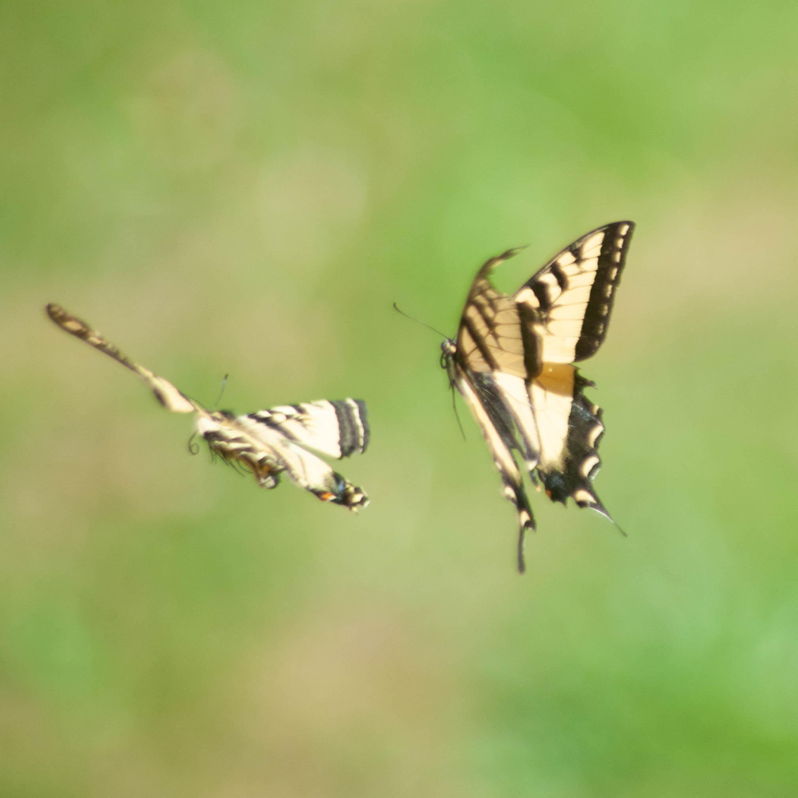
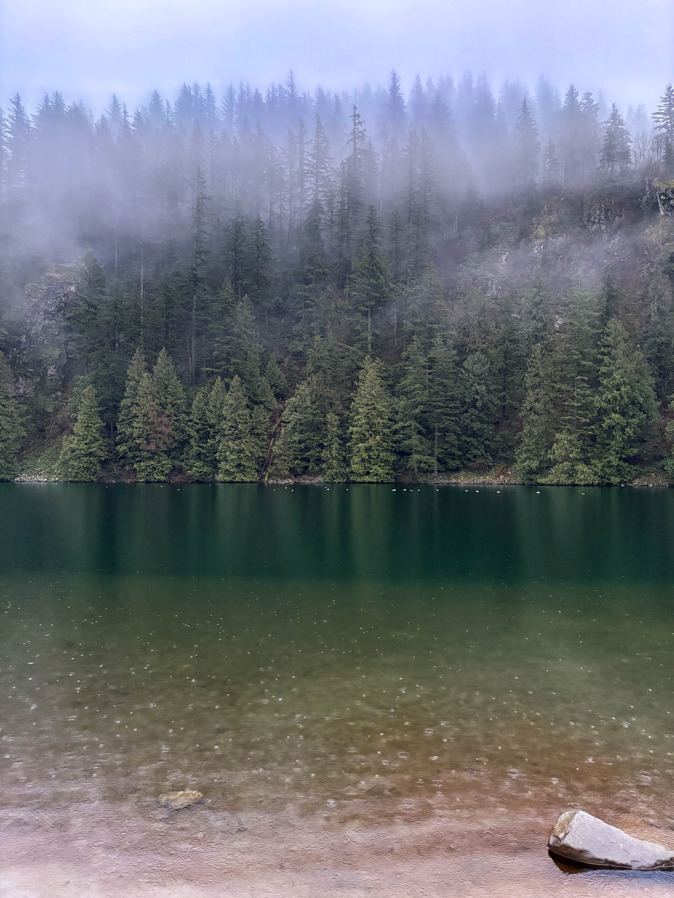
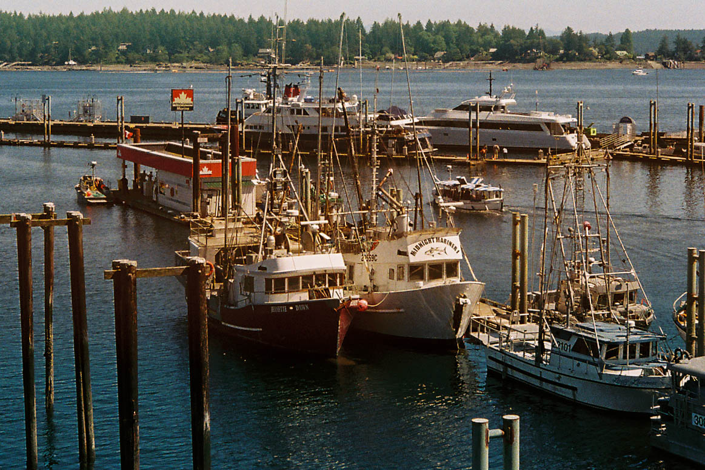

Context




Nature Photography
Nature reveals its greatest secrets to those who pause long enough to observe. Through my lens, I explore the intricate details of the natural world—the delicate textures of flora, the raw beauty of geological formations, and the interplay of light filtering through dense forests. Nature photography is a meditation on time, patience, and the profound artistry already present in our surroundings. It's about seeing the extraordinary in the ordinary, capturing subtle moments that showcase the incredible diversity and resilience of ecosystems. Every image is an invitation to slow down, appreciate the precision of nature's design, and recognize our place within the larger tapestry of the living world.




Travel Photography
Travel photography captures the essence of our world—from serene mountain peaks to bustling harbors, each frame tells a unique story. My journey through photography has taught me that the best shots emerge when you venture off the beaten path, seek the perfect light, and embrace the unexpected moments that unfold. Whether photographing dramatic sunsets, maritime landscapes, or hidden coastal gems, I strive to preserve the beauty and wonder of every destination. Travel photography isn't just about collecting images; it's about connecting with cultures, appreciating diverse landscapes, and sharing the transformative power of exploration with others through the lens.